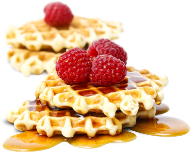

Waffle Tarifi
Pişme Süresi: 25 Dk Porsiyon: 2-4 Kişilik
İçindekiler:
- 2 adet yumurta
- 4 yemek kaşığı toz şeker
- 1 su bardağı süt
- 1/4 (çeyrek) su bardağı sıvı yağ
- 1 paket vanilya
- 1 paket kabartma tozu
- Bir çimdik tuz
- 2 su bardağı un
Yapılışı:
Waffle hamuru yapmak için; öncelikle yumurta ve şekeri iyice köpürünceye kadar çırpalım.
Süt, sıvı yağ, tuz, kabartma tozu, vanilya ve unu ekleyip tekrar çırpalım. Waffle hamur hazır, pişirme işlemine geçebiliriz.
Waffle makinesini ısıtıp 1 kepçe kadar hamuru makineye boşaltalım. Kapağını kapatıp pişmeye bırakalım. Pişirme işlemi
kullandığınız waffle makinesine göre farklılık gösterebilir. Burada makinenizin kullanım kılavuzunu dikkate almanızı öneririm.
Waffle hamuru pişerken meyvelerimizi dilimleyelim. Mevsimine göre hangi meyveyi kullanacağınızı kendiniz seçebilirsiniz.
Ben en çok tercih edilen çilek muz ve kivi ile hazırlayacağım.
Pişen waffle hamuru üzerine önce çikolatamızı sürelim. Üzerine istediğimiz meyveleri dizelim.
Ardından fındık kırıkları ve fıstıkla süsleyelim. Waffle servise hazır. Şimdiden afiyet olsun :)